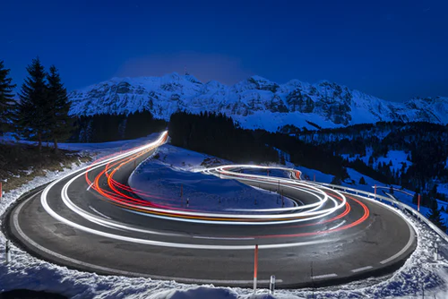

 Love is complex. A mix of emotions, behaviors, and beliefs associated with strong feelings of affection, protectiveness, warmth, and respect for 2zanother person. Love can also be used to apply to non-human animals, to principles, and to religious beliefs. For example, a person might say he or she loves his or her dog, loves freedom, or loves God. What Is Love? Love has been a favored topic of philosophers, poets, writers, and scientists for generations, and different people and groups have often fought about its definition. While most people agree that love implies strong feelings of affection, there are many disagreements about its precise meaning, and one person’s “I love you” might mean something quite different than another’s. Ready to speak to someone about love, relationships, and commitment issues? Click here to search for a therapist near you today. Some possible definitions of love include: A willingness to prioritize another’s well-being or happiness above your own. Extreme feelings of attachment, affection, and need. Dramatic, sudden feelings of attraction and respect. A fleeting emotion of care, affection, and like. A choice to commit to helping, respecting, and caring for another, such as in marriage or when having a child. Some combination of the above emotions. There has been much debate about whether love is a choice, is something that is permanent or fleeting, and whether the love between family members and spouses is biologically programmed or culturally indoctrinated. Love may vary from person to person and culture to culture. Each of the debates about love may be accurate in some time and someplace. For example, in some instances, love may be a choice while in others it may feel uncontrollable. A willingness to prioritize another’s well-being or happiness above your own. Extreme feelings of attachment, affection, and need. Dramatic, sudden feelings of attraction and respect. A fleeting emotion of care, affection, and like. A choice to commit to helping, respecting, and caring for another, such as in marriage or when having a child. Some combination of the above emotions. There has been much debate about whether love is a choice, is something that is permanent or fleeting, and whether the love between family members and spouses is biologically programmed or culturally indoctrinated. Love may vary from person to person and culture to culture. Each of the debates about love may be accurate in some time and someplace. For example, in some instances, love may be a choice while in others it may feel uncontrollable.A willingness to prioritize another’s well-being or happiness above your own. Extreme feelings of attachment, affection, and need. Dramatic, sudden feelings of attraction and respect. A fleeting emotion of care, affection, and like. A choice to commit to helping, respecting, and caring for another, such as in marriage or when having a child. Some combination of the above emotions. There has been much debate about whether love is a choice, is something that is permanent or fleeting, and whether the love between family members and spouses is biologically programmed or culturally indoctrinated. Love may vary from person to person and culture to culture. Each of the debates about love may be accurate in some time and someplace. For example, in some instances, love may be a choice while in others it may feel uncontrollable. A willingness to prioritize another’s well-being or happiness above your own. Extreme feelings of attachment, affection, and need. Dramatic, sudden feelings of attraction and respect. A fleeting emotion of care, affection, and like. A choice to commit to helping, respecting, and caring for another, such as in marriage or when having a child. Some combination of the above emotions. There has been much debate about whether love is a choice, is something that is permanent or fleeting, and whether the love between family members and spouses is biologically programmed or culturally indoctrinated. Love may vary from person to person and culture to culture. Each of the debates about love may be accurate in some time and someplace. For example, in some instances, love may be a choice while in others it may feel uncontrollable. A willingness to prioritize another’s well-being or happiness above your own. Extreme feelings of attachment, affection, and need. Dramatic, sudden feelings of attraction and respect. A fleeting emotion of care, affection, and like. A choice to commit to helping, respecting, and caring for another, such as in marriage or when having a child. Some combination of the above emotions. There has been much debate about whether love is a choice, is something that is permanent or fleeting, and whether the love between family members and spouses is biologically programmed or culturally indoctrinated. Love may vary from person to person and culture to culture. Each of the debates about love may be accurate in some time and someplace. For example, in some instances, love may be a choice while in others it may feel uncontrollable. A willingness to prioritize another’s well-being or happiness above your own. Extreme feelings of attachment, affection, and need. Dramatic, sudden feelings of attraction and respect. A fleeting emotion of care, affection, and like. A choice to commit to helping, respecting, and caring for another, such as in marriage or when having a child. Some combination of the above emotions. There has been much debate about whether love is a choice, is something that is permanent or fleeting, and whether the love between family members and spouses is biologically programmed or culturally indoctrinated. Love may vary from person to person and culture to culture. Each of the debates about love may be accurate in some time and someplace. For example, in some instances, love may be a choice while in others it may feel uncontrollable. A willingness to prioritize another’s well-being or happiness above your own. Extreme feelings of attachment, affection, and need. Dramatic, sudden feelings of attraction and respect. A fleeting emotion of care, affection, and like. A choice to commit to helping, respecting, and caring for another, such as in marriage or when having a child. Some combination of the above emotions. There has been much debate about whether love is a choice, is something that is permanent or fleeting, and whether the love between family members and spouses is biologically programmed or culturally indoctrinated. Love may vary from person to person and culture to culture. Each of the debates about love may be accurate in some time and someplace. For example, in some instances, love may be a choice while in others it may feel uncontrollable. A willingness to prioritize another’s well-being or happiness above your own. Extreme feelings of attachment, affection, and need. Dramatic, sudden feelings of attraction and respect. A fleeting emotion of care, affection, and like. A choice to commit to helping, respecting, and caring for another, such as in marriage or when having a child. Some combination of the above emotions. There has been much debate about whether love is a choice, is something that is permanent or fleeting, and whether the love between family members and spouses is biologically programmed or culturally indoctrinated. Love may vary from person to person and culture to culture. Each of the debates about love may be accurate in some time and someplace. For example, in some instances, love may be a choice while in others it may feel uncontrollable. A willingness to prioritize another’s well-being or happiness above your own. Extreme feelings of attachment, affection, and need. Dramatic, sudden feelings of attraction and respect. A fleeting emotion of care, affection, and like. A choice to commit to helping, respecting, and caring for another, such as in marriage or when having a child. Some combination of the above emotions. There has been much debate about whether love is a choice, is something that is permanent or fleeting, and whether the love between family members and spouses is biologically programmed or culturally indoctrinated. Love may vary from person to person and culture to culture. Each of the debates about love may be accurate in some time and someplace. For example, in some instances, love may be a choice while in others it may feel uncontrollable.